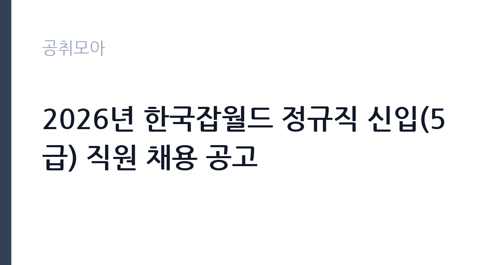

[공공기관] 2026년 한국잡월드 정규직 신입(5급) 직원 채용 공고
한국잡월드 · 경기 · 마감 2026-11-04 (D-16) · 출처 잡알리오

한눈에 보는 모집 조건
| 기관 | 한국잡월드 |
|---|---|
| 공고명 | 2026년 한국잡월드 정규직 신입(5급) 직원 채용 공고 |
| 고용형태 | 정규직 |
| 근무지 | 경기 |
| 게시일 | 2026-10-20 |
| 마감일 | 2026-11-04 (D-16) |
지원자격, 이렇게 읽으세요
- 공공기관 채용공시
- 세부 조건은 원문 공고문 확인
응시자격은 크게 공통 요건과 분야별 요건으로 나뉩니다. 공통 요건은 접수 마감일 기준 정년(만 60세)을 넘지 않는 사람, 한국잡월드 인사규정 제13조 결격사유에 해당하지 않는 사람, 국가공무원법 제33조에 저촉되지 않는 사람, 최종합격 후 임용일부터 즉시 근무가 가능한 사람입니다. 여기서 실무적으로 가장 많이 걸리는 부분은 마지막 항목입니다. 현 직장에 다니고 있다면 퇴사 일정과 임용일이 맞물리는지 먼저 계산하셔야 합니다. 분야별로는 공개경쟁과 제한경쟁(취업지원대상자)이 나뉘고, 제한경쟁은 접수 마감일 기준 보훈관계법률에 따른 가점대상자에게만 열립니다. 본인이 보훈 대상자인데 공개경쟁으로 중복 접수하면 부적격이 될 수 있으니, 지원 트랙을 먼저 확정하십시오. 학력·전공 제한은 별도로 걸려 있지 않지만 블라인드 채용 가이드라인을 적용하므로 자기소개서에 학교명·출생지·가족관계를 쓰지 않는 것이 안전합니다.
이 공고의 포인트
이 공고의 핵심은 세 가지입니다. 첫째, 정규직 5급 신입이라는 점입니다. 잡월드는 5급 정규직 신입을 매년 정기적으로 뽑아왔고, 이번 회차도 같은 트랙입니다. 둘째, 정년이 만 60세로 공고문에 명시돼 있다는 점입니다. 공공기관 중에는 정년을 공고에 적지 않는 곳도 많은데, 이 조건이 명시된 공고는 장기 근속을 전제로 한 자리라는 신호입니다. 셋째, 근무지가 성남 분당이라는 점입니다. 서울 강남권과 바로 붙어 있어 수도권 통근이 가능하면서, 조직 규모는 50명대 후반으로 크지 않습니다. 대형 공기업의 반복된 서류 탈락에 지친 지원자라면 눈여겨볼 만한 규모입니다.
전형은 어떻게 진행되나
전형은 공공기관 정규직 신입 채용의 표준 흐름을 따릅니다. 서류전형에서 응시자격과 자기소개서를 보고, 필기전형에서 직무 관련 상식과 인성·NCS 영역을 확인한 뒤, 면접전형에서 직무 적합성과 조직 적응력을 검증합니다. 잡월드의 과거 5급 신입 회차도 서류와 면접 결과를 별도 공고로 공지해왔으므로, 각 전형마다 합격자 발표 공지가 홈페이지에 올라온다고 보시면 됩니다. 최종 단계에서는 결격사유 조회와 신원 확인이 이뤄집니다. 필기와 면접 사이 간격이 길지 않으므로, 서류를 낸 뒤에는 결과를 기다리지 말고 바로 필기 준비를 시작하는 편이 좋습니다. 세부 전형 방식과 배점은 원문 공고문에서 확인하셔야 합니다.
원문에서 확인한 전형 방식
1. 공통 응시자격 -한국잡월드 정년(만 60세)을 초과하지 않은 자(접수 마감일 기준) -한국잡월드 인사규정 제13조(결격사유)에 해당하지 않는 자 -국가공무원법 제33조의 규정에 저촉되지 않는 자 -최종합격 후, 임용일 즉시 근무가 가능한 자 2. 채용분야별 응시자격 - 공개경쟁: 제한없음 - 제한경쟁(취업지원대상자): 접수 마감일 기준 국가유공자 등 예우 및 지원에 관한 법률 등 보훈관계법률에 따른 가점대상자
이런 분께 추천해요
- 경기 성남·분당으로 출퇴근이 가능한 분 — 근무지가 분당수서로 일대입니다
- 경력이 없어도 정규직으로 시작하고 싶은 분 — 5급 신입 트랙입니다
- 보훈 취업지원대상자로 제한경쟁 트랙을 노리는 분 — 별도 전형이 열려 있습니다
지원 전 체크리스트
- 임용일 즉시 근무가 가능한가 — 재직 중이라면 퇴사 일정부터 계산하십시오
- 공개경쟁과 제한경쟁 중 어디에 해당하는가 — 중복 접수는 부적격 사유입니다
- 자기소개서에 학교명·가족관계 등 블라인드 위반 요소가 없는가
- 마감일 2026-11-04 이전에 접수증까지 출력했는가
모집 일정과 제출 타이밍
마감일은 2026-11-04입니다. 접수 시작일부터 마감일까지 약 보름의 기간이 주어지지만, 실제로 준비해야 할 분량은 적지 않습니다. 권장 일정은 이렇습니다. 첫 주에는 공고문과 직무기술서를 정독해 채용분야를 확정하고, 둘째 주 초에 자기소개서 초안을 완성합니다. 둘째 주 중반에는 필기 대비로 NCS 의사소통·수리 영역과 상식 문제를 풀고, 마감 사흘 전에는 접수 시스템에 미리 입력해 두십시오. 마감 당일 오후에 접속하면 서버 지연으로 제출을 놓치는 사례가 흔합니다. 접수 후에는 접수번호와 확인 메일을 반드시 보관하십시오.
직무 이해하기: 공공기관
한국잡월드는 2011년 문을 연 국내 최대 규모의 종합직업체험관입니다. 어린이와 청소년이 실제 직업 환경을 체험하고 진로를 탐색하도록 돕는 것이 본업이고, 전통기술부터 첨단기술까지 체험존을 나눠 운영합니다. 5급 신입은 이 사업의 운영 한가운데에 배치됩니다. 구체적으로는 체험관 전시 콘텐츠 기획과 개선, 학교 단체 대상 진로체험 프로그램 운영, 직업정보 콘텐츠 제작, 행사·특별전 운영 지원 등이 핵심 업무입니다. 행정직으로 입사해도 현장 운영과 기획을 함께 맡는 구조라, 문서 작업만 하기를 기대했다면 현장 대응력을 요구받게 됩니다. 방학철에는 단체 관람이 몰려 업무 강도가 올라가는 점도 미리 알고 계셔야 합니다.
자기소개서 작성 팁
자기소개서의 승부처는 지원동기가 아니라 직무 이해입니다. 첫 문단에서 잡월드가 하는 일을 한 문장으로 정의하고, 그 안에서 내가 맡을 수 있는 일을 바로 제시하십시오. 본론은 경험 두 개로 압축합니다. 하나는 사람을 상대한 운영 경험, 다른 하나는 기획이나 콘텐츠를 만들어 본 경험입니다. 아르바이트, 동아리, 대외활동도 좋지만 숫자를 붙이십시오. 예를 들어 몇 명 규모의 프로그램을 몇 회 운영했고, 참여율을 어떻게 올렸는지를 쓰는 것입니다. 마무리에는 입사 후 개선하고 싶은 지점을 하나 제안하십시오. 주의할 점은 두 가지입니다. 블라인드 위반 요소를 넣지 말 것, 그리고 잡월드를 단순 체험관으로 소개하지 말 것. 진로교육 기관이라는 정체성을 이해한 지원자로 보여야 합니다.
면접 준비 포인트
면접에서는 직무 상황형 질문이 중심이 됩니다. 관람객이 몰리는 시간대에 안전사고 위험이 생겼을 때 어떻게 대응할지, 단체 관람 학교의 요구와 운영 원칙이 충돌할 때 무엇을 우선할지 같은 질문이 나올 수 있습니다. 답할 때는 결론을 먼저 말하고, 판단 기준을 밝힌 뒤, 실제 경험을 붙이십시오. 잡월드의 주요 이용자가 초·중·고 학생과 교사라는 점도 기억하십시오. 학생 안전과 교육 효과를 함께 언급하면 직무 이해도가 드러납니다. 마지막으로 공공기관 채용답게 조직 적응과 공직가치 관련 질문이 붙습니다. 갈등 상황에서 원칙과 관계를 어떻게 조율했는지 한 가지 사례를 준비해 가십시오.
급여·근무조건 읽는 법
보수는 공고문에 상세 보수표가 붙는 구조이므로 원문에서 확인하셔야 합니다. 다만 채용정보 플랫폼이 공공데이터를 기반으로 공개한 수치를 보면, 한국잡월드의 초봉은 3,771만원, 평균 연봉은 5,526만원 수준입니다. 이 수치는 공식 확정치가 아니라 신고·공시 데이터를 가공한 참고값입니다. 5급 신입의 경우 초임 연봉에 기본급과 각종 수당이 포함된 개념이고, 성과급은 기관의 경영평가 결과와 개인 평가에 따라 별도로 지급됩니다. 따라서 실수령액은 초봉 숫자보다 낮게 잡는 것이 현실적입니다. 정규직이므로 4대 보험과 퇴직급여는 당연 적용되고, 정년은 만 60세입니다. 정확한 기본급·수당·상여 구분은 원문 보수표에서 확인하십시오.
자주 묻는 질문
- 경력이 없어도 지원할 수 있나요?
네. 5급 신입 채용이므로 경력 요건이 별도로 걸려 있지 않습니다. 다만 임용일 즉시 근무 가능해야 하고, 정년인 만 60세를 넘지 않아야 합니다. - 초봉은 얼마인가요?
공고문에 보수표가 첨부됩니다. 채용정보 플랫폼의 공공데이터 기준으로는 초봉 3,771만원, 평균 5,526만원 수준으로 집계되어 있으나 공식 확정치는 아닙니다. 원문 보수표를 확인하십시오. - 보훈 대상자는 어떻게 지원하나요?
제한경쟁(취업지원대상자) 트랙으로 별도 접수합니다. 접수 마감일 기준 보훈관계법률에 따른 가점대상자여야 하며, 공개경쟁과 중복 접수하면 부적격이 될 수 있습니다.
함께 보면 좋은 공고
[공공기관] 2026년 하반기 중소벤처기업진흥공단 체험형 청년인턴(일반) 채용 공고 — 마감 2026-11-03[공공기관] 2026년 제3차 동남권원자력의학원 직원채용 공고 — 마감 2026-11-02[공공기관] '2026년 ICT활용 종목활성화 지원 사업' 초빙연구원(가) 채용 공고 — 마감 2026-11-03출처: 잡알리오 공개정보를 바탕으로 공취모아가 정리한 안내글입니다. 모집 조건·일정은 변경될 수 있으니 지원 전 반드시 원문 공고문을 확인하세요. 본 글은 정보 제공용이며 합격을 보장하지 않습니다.